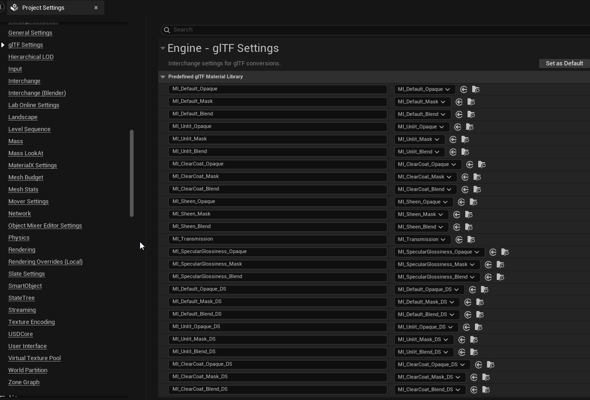
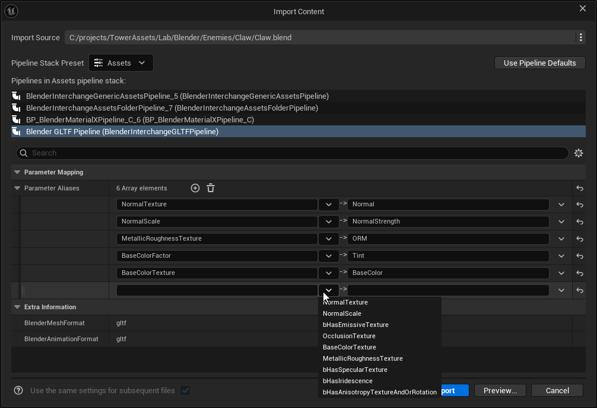
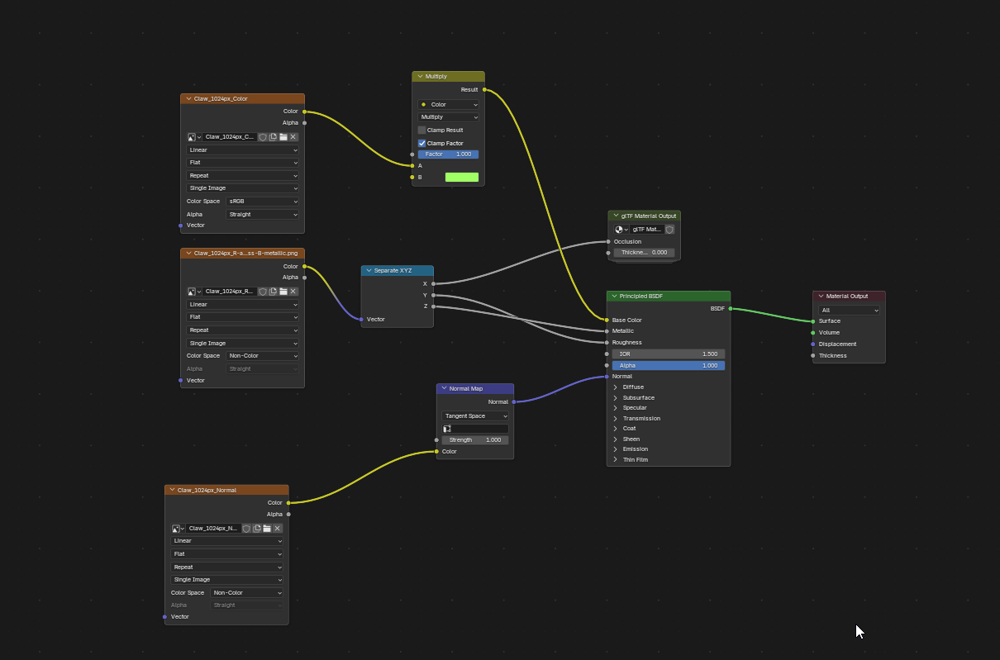

Material Import Overview
Importing materials accurately from Blender can be a bit involved. This guide hopefully explains the nuance of how you can get materials you author in Blender into Unreal Engine in a consistent way. This guide was written for Unreal Engine 5.7 and later. It also assumes that you are using the default format of glTF for your translator - see Import Settings for for more information.
How Interchange Handles Materials
As you likely know, the Blender Interchange plugin is built on top of Epic's Interchange framework - which is Epic's latest and greatest framework for importing assets. Epic's philosophy on material import until the 5.7 release has been to try recreate the material graphs created externally with Unreal's shader nodes.
As you can imagine this can be a bit of an error-prone process which is not what most people want when importing materials. Luckily, as of 5.7 that strategy has shifted and they have indicated that they will be focusing primarily on pre-built materials that have material instances created instead of entirely new materials.
Making material instances enables transferring materials defined in Blender to materials set up in the engine can become a lot more straightforward. On the blender side if you bake your material information into textures those textures will be hooked up to the proper material instance on import resulting in a smooth experience.
Using a Custom Material Instance Base
By default the plugin will import your material for you using the glTF materials defined in the project settings. Under Edit > Project Settings > glTF Settings you'll find a list of material archetypes mapped to material instances that ship with the engine and provide decent out of the box results.
However it's worth noting that there are 2 separate ways you can change these material instances to one specific to your project. - You can specify an override material instance in the import dialog. This has higher priority than the project settings - You can change the project settings to use your material instance by default. You can hook up your material to each entry or you can just override MI_Default_Blend and MI_Default_Blend_DS which are the most common glTF shading models you will encounter. More info on that later.

Hooking up Material Instance Parameters
At this point you may be wondering how import knows which material instance parameters to override. The short answer is that it's looking for specific parameters like BaseColorTexture and NormalTexture.
The default glTF material instances have the correct names so they hook up without issue. However, you do not need to provide exactly the same names to properly import. Blender Interchange has an alias system that allows you to re-map the built in parameter names to ones that work with your projects materials or even marketplace materials. For instance a material might have a AlbedoTexture instead of BaseColorTexture.
Specifying an alias is simple . The settings are under the Blender glTF pipeline. The plugin ships with a few prespecified and you can specify other alias mappings using a dropdown or manually.
The dropdown shows you the parameters that are actually available for your current session to help avoid typos. More on that below

Here's an overview of what each parameter means and their expected use-case
| Parameter | Description |
|---|---|
| BaseColorTexture | The base color or albedo. This is hooked up when the model uses a texture |
| BaseColorFactor | This is a tint to apply either by multiplying the texture or by itself for flat color materials |
| bHasBaseColorTexture | Set to false if texture if the Blender shader was using a flat color instead of a texture. Not specified as an override if a texture was used |
| MetallicRoughnessTexture | This is an ORM texture. The glTF materials for the engine use the GB channels of this texture. |
| bHasMetallicRoughnessTexture | Set to true if texture is being used for metallic and roughness |
| OcclusionTexture | This is an occlusion texture. The glTF materials use only the R channel and if you use ORM this will be the same texture as the MetallicRoughnessTexture. |
| bHasOcclusionTexture | Set to false if no ORM texture hooked up in blender shader. Not set if a texture was provided. |
| NormalTexture | Texture for normals. |
| NormalScale | Strength of normals. This corresponds to the strength you plug into the normal map node in blender before plugging the result into the normal pin of your shader. |
| bHasNormalTexture | Set to false if no normal texture hooked up in blender shader. Not set if a texture was provided. |
| SpecularTexture | This uses the alpha channel by default so you can pack this into the ORM texture's alpha channel. If blender sees any textures hooked up to Specular IOR it will use this texture |
| bHasSpecularTexture | True if a specular texture exists. Not specified if blender had no texture |
| SpecularFactor | This is a a multiplier on the texture or a hard-coded value for the entire material |
| EmissiveTexture | This is used for glow. It's a RBG color in both Unreal and in Blender. Hook up the to the Emission color in blender to hook it up. |
| bHasEmissiveTexture | True if there is an emissive texture. Non-existent if there is none. |
| EmissiveFactor | This is RBG color that gets multiplied with the emissive texture or used as is if there is no texture. You can get this passed to blender using a mix node with a factor of 1. |
| # Example | |
| Here's an example material you should consider copying to get good results on import. This material is based on blender's official gltf export guide. For this material I used blender's built in bake functionality to bake textures but you could also hook up textures created externally. It's worth noting the plugin also does a good job of exporting simple materials like materials with flat shading and hard coded values. |

On the Unreal side I've created a simple material to receive the textures I hooked up in Blender. Your material can be anything even marketplace materials as long as it can receive textures as parameters.
How Blender encodes Parameters
One thing to note is that blender only exports parameters for glTF if they are relevant to your shader. A common example of this is with textures. Every texture has a corresponding bHasTexture parameter but that is only set to false if the texture wasn't provided. It's implicitly true otherwise.
Another example is if you're original shader did not have a tint or flat color hooked up BaseColorFactor will not be set.
GLTF Material Names
You may have noticed that the glTF settings in unreal have a lot of different names not just MI_Default_Opaque and be a bit overwhelmed over all the options. The reason for this is that glTF actually has 6 built-in shading models, 3 blend modes, and 2 backface culling modes. This results in 6 x 3 x 2 = 36 different possible materials. The transmission shading model only has one alpha mode so there are actually 34 possible materials.
The name of the material instance follows this format: One Sided Materials: MI_ShadingModel_BlendMode Two Sided Materials: MI_ShadingModel_BlendMode_DS Transmission Materials: MI_Transmission_{_DS}
Below are the model combinations available in unreal and how to set up their usage in blender.
| Shading Model | Description | How to Enable |
|---|---|---|
| DEFAULT | This is what your material will likely get. | Enabled by default unless other model conditions are met. |
| UNLIT | Unlit does not take lights into consideration when shading the pixels. This could be used for stylistic reasons. | Use a mix shader instead of a Principled BSDF. See the official guide for the setup. |
| SHEEN | Sheen is used for reflective materials that have microsurface detail (cloth or silk for instance) | Output a non-zero value to the sheen output of your shader. |
| CLEARCOAT | This adds a reflective layer over your material similar to car paint | Output a non-zero value to the Coat output of your shader. Takes priority over Sheen. |
| TRANSMISSION | This is used to render materials like glass or liquids which refract/transmit light internally. | Output a non-zero value to Transmission. Takes Priority over Clearcoat and Sheen. |
| SPECULARGLOSSINESS | This is an alternative shading model that is not well supported in blender | not supported for export |
| Blend Mode | Description | How to Enable |
|---|---|---|
| Opaque | No alpha in the material. This is the cheapest alpha mode to use for opaque materials. | Used when alpha is hard set to 1.0 |
| Mask | Alpha below a threshold sets the pixel to be invisible or masked out. This is a cheaper version of blend. | Alpha is hooked up to a value through a Round node. Blender looks for this node to opt in to this model. |
| Blend | Alpha sets transparency of the pixel. This is the most expensive blending mode in games. | Non-zero values are used for the model without a round node |
| Two-Sided | Description | How to Enable |
|---|---|---|
| Yes | Backfaces are visible. More expensive in some cases. | Enabled by default. |
| No | Backfaces are not visible. | Go to the materials panel in blender. Uncheck Backface Culling for the camera under the Viewport Display section |